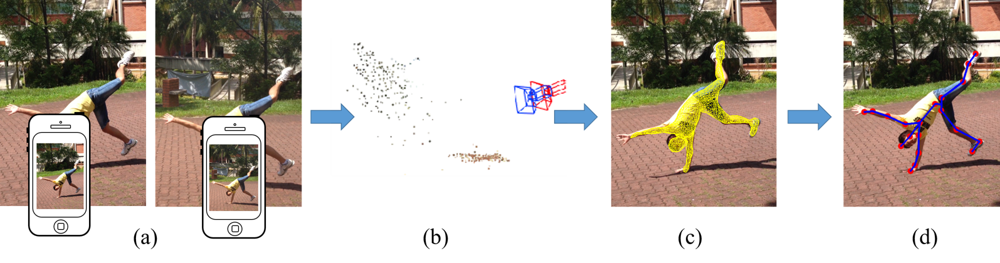
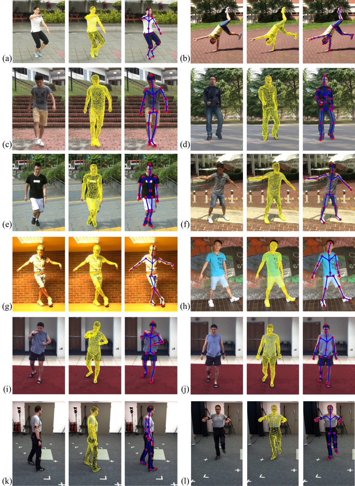
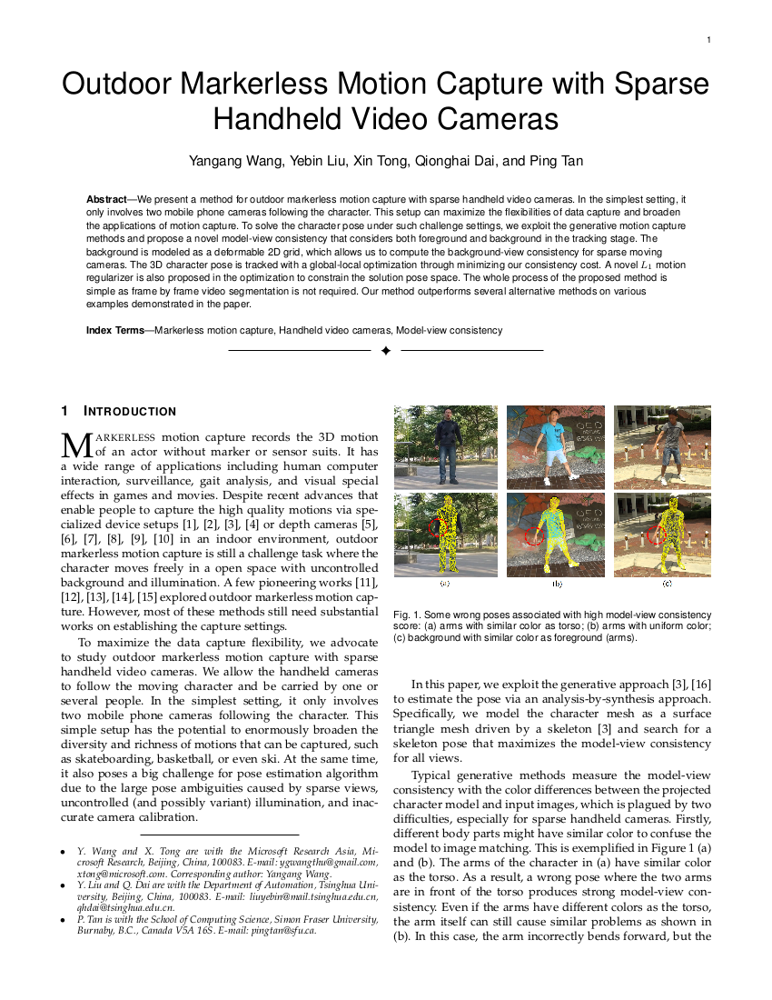

IEEE Transactions on Visualization and Computer Graphics (TVCG 2017)
Outdoor Markerless Motion Capture with Sparse Handheld Video Cameras

System pipeline.
(a) Our system takes multiple synchronized videos captured by handheld cameras as input. (b) We adopt the CoSLAM method to calibrate all cameras in 3D space. (c) Our motion tracking system estimates the skeleton motion with a sample-based method. (d) We use a gradient-based method to refine the skeleton pose.Abstract
We present a method for outdoor markerless motion capture with sparse handheld video cameras. In the simplest setting, it only involves two mobile phone cameras following the character. This setup can maximize the flexibilities of data capture and broaden the applications of motion capture. To solve the character pose under such challenge settings, we exploit the generative motion capture methods and propose a novel model-view consistency that considers both foreground and background in the tracking stage. The background is modeled as a deformable 2D grid, which allows us to compute the background-view consistency for sparse moving cameras. The 3D character pose is tracked with a global-local optimization through minimizing our consistency cost. A novel L1 motion regularizer is also proposed in the optimization to constrain the solution pose space. The whole process of the proposed method is simple as frame by frame video segmentation is not required. Our method outperforms several alternative methods on various examples demonstrated in the paper.
Results

Materials
 |
|
Acknowledgments
We would like thank Kaimo Lin to help us to capture the majority of data. This work was supported in part by the National Key Foundation for Exploring Scientific Instrument No.2013YQ140517, the National Science Foundation of China (NSFC) No.61522111 and No.61531014.
Bibtex
@article{wang2017outdoormocap,
author = {Wang, Yangangang and Liu, Yebin and Tong, Xin and Dai, Qionghai and Tan, Ping},
title = {Outdoor Markerless Motion Capture with Sparse Handheld Video Cameras},
journal = {IEEE transactions on visualization and computer graphics},
year = {2017},
publisher = {IEEE}
}
author = {Wang, Yangangang and Liu, Yebin and Tong, Xin and Dai, Qionghai and Tan, Ping},
title = {Outdoor Markerless Motion Capture with Sparse Handheld Video Cameras},
journal = {IEEE transactions on visualization and computer graphics},
year = {2017},
publisher = {IEEE}
}